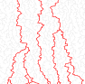

Some images of my research

On the left is a simulation of the First Passage Percolation with Recovery process
at time \(t=13\) with recovery rate \(\gamma=\frac{1}{2}\)
on a Galton Waston tree with branching distribution \(\mathrm{Bin}(2,\frac{4}{5})\).
The black edges show the infected cluster reached by the standard first-passage percolation process (with rate \(1\))
spreading from the root by time \(t\). Red vertices mark individuals whose recovery clocks (running at rate \(\gamma\))
were triggered upon infection by time \(t\), but had not yet rung.
In [A1], we introduce and analyze this
original model, where a recovery mechanism runs independently on top of a first-passage percolation process,
deriving asymptotics for the size of red components as \(t\to\infty\).

On the right is a simulation of the 2-dimensional Directed Spanning Forest (DSF).
In grey are represented the edges of this random geometric graph, while in red are highlighted
the infinite paths starting from some vertices located below the bottom of the displayed area.
The DSF of dimension \(d\geq 2\) is the random geometric graph whose vertex set is given by a
homogeneous Poisson point process \(\mathcal N\) in \(\mathbb R^d\) and whose edges
consist of all pairs \((x, y)\in\mathcal N^2\) such that \(y\) is the closest point
to \(x\) in \(\mathcal N\) with a strictly larger \(e_d\) coordinate.
The DSF has a natural forest structure: it is a collection of unrooted directed trees.
A natural question is whether the DSF forms a single tree,
meaning that all directed paths eventually coalesce, or whether it consists of several disjoint trees.
The case \(d=2\) is now well understood: Coupier, Saha, Sarkar, and Tran
showed in 2021 that the 2-dimensional DSF is almost surely a tree
and converges under appropriate diffusive scaling to the Brownian web.
In [P1], we addressed for the first time the question of coalescence outside the planar setting.
We showed that the DSF is almost surely a tree when \(d \leq 3\),
and that it consists of infinitely many disjoint trees when \(d \geq 4\).